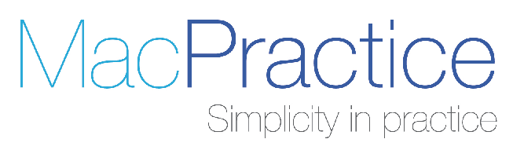

As of 2011, MacPractice DDS became one of the first fully ONC-certified, integrated electronic health record system for dentistry, including practice management and clinical software. Periodontal and tooth charting are incorporated with HL7-compliant digital imaging options, and robust connections are made to a variety of imaging devices and other types of software. As the name suggests, MacPractice DDS runs on the Macintosh operating system.
MacPractice also allows attachments to the patient record, or scanning of documents to incorporate them into patient history or exam follow-up. Tasks can be assigned to review or complete attachments, allowing for a paperless workflow. In-program scheduling can be updated to synchronized across devices to inform providers about changes to the daily schedule, and appointment reminders are automated as well. Electronic claims and prescriptions, including Medicare and formulary checking, streamline office tasks. Notes, patient letters, forms and other documents can be created within the program and work with voice-activated software for ease of data entry.
A patient portal allows web registration, HIPAA forms, appointment confirmation and other tasks to be completed prior to entering the office. Reports, reminders and batch claims submission simplify front-office tasks further.
To visit MacPractice, click here (link to https://www.macpractice.com/dds/)